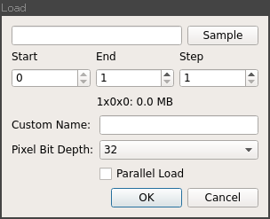
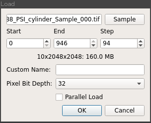
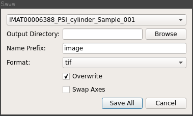

Loading and Saving¶
Loading sand saving data is performed via the Load and Save options on the File menu.
Loading¶
When Load is selected, the following dialog will appear:
This allows you to select the data you wish to load; in the case of TIFF or FITS images then any image in a directory containing an image stack can be selected or a single NeXus file if loading from NeXus.
Once data has been selected, it’s shape is inspected and the stack index fields pre populated as shown below:
The Start and End fields control the range of images that are loaded and Step defines the interval at which images are selected.
A default is set once data has been selected that specifies 10 images over the full stack of images.
The Custom Name option allows you to specify a name for the loaded image stack manually, if none is provided then a default name derived from the filename will be used.
Pixel Bit Depth is used for the estimated memory size calculation, typically images will use 32bit floating point numbers as the pixel format so this can be left at the default value of 32.
Parallel Load attempts to load the images in parallel, however on IO limited systems this can prove slower than a sequential load, hence it is recommended not to enable this option.
Saving¶
The Save option is only enabled when at least one stack is loaded.
When selected the save dialog appears:
This prompts you to select the image stack you wish to save, the directory in which you wish to save it and the name prefix. In the case of TIFF and FITS the individual image filenames will be a concatenation of this prefix and the index of the image in the stack.
The Overwrite option removes checking for existing data of the same name. When disabled an error will be raised of the specified output directory is not empty prior to saving.
Swap Axes is used to convert between projection and sinogram indexed image stacks.